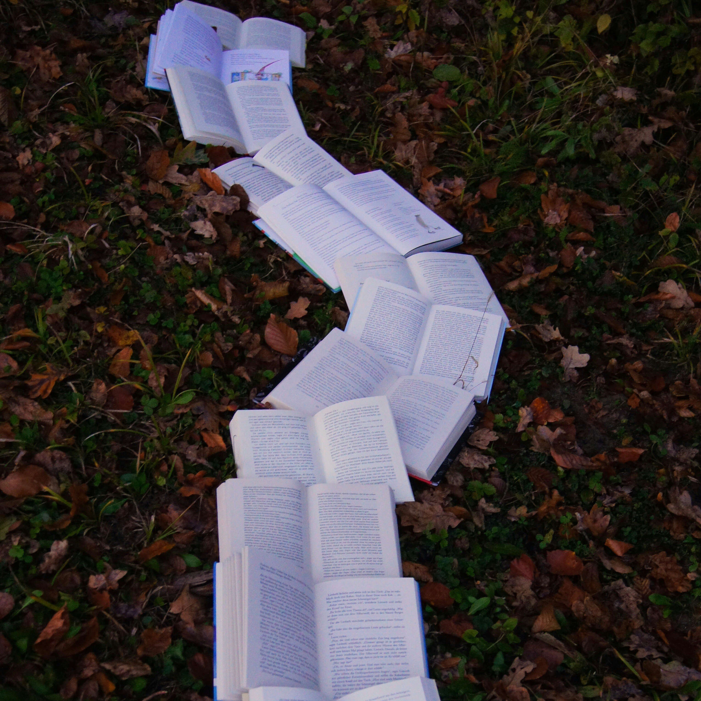

Фритрек и нулевой спринт: Подготовка к работе
</HTML>

Это было самое начало пути. На этом этапе важно было проникнуться основами и настроиться на учёбу. И, возможно, подумать, как новые знания могут повлиять на ваше будущее.
Помню, как я впервые погрузилась в основы CSS и HTML, стараясь понять, с чего начать и как правильно подойти к знаниям. Я старалась настроиться на учебу и проникнуться процессом. Именно в тот момент я впервые задумалась о том, как новые навыки и знания помогут мне достичь целей, которые я себе поставила.